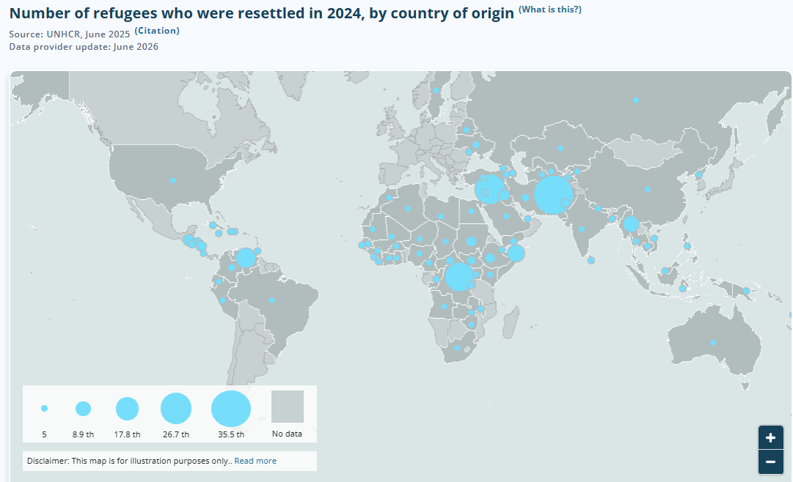
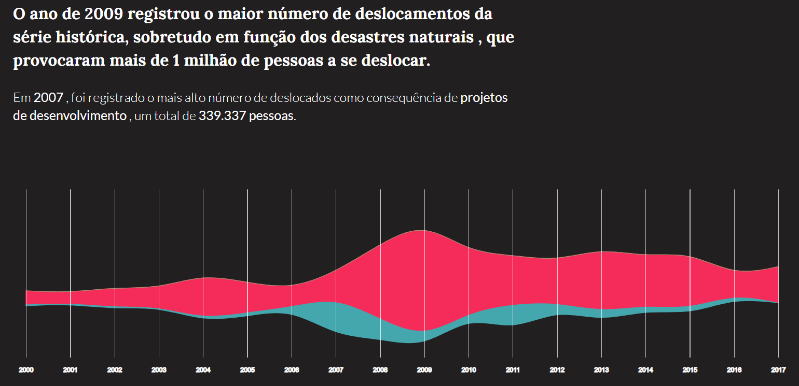

![Capa de Entre público e privado — governança e patrimonialismo no reassentamento de Belo Monte, Ensaio Geral nº 2, Marina Bozzetto. Clique para ler on-line.]()
Nº 2 · 2026
Entre público e privado
Governança e patrimonialismo no reassentamento de Belo Monte
Marina Bozzetto
Ler o texto integralFechar o texto
Introdução
A definição de reassentamento não é simples nem única. Esse termo pode ser utilizado em diversos contextos com diferentes significados e arcabouços de regulação. Esta pesquisa trabalha com um recorte específico de reassentamento. Muitas vezes este termo é trazido como “reassentamento involuntário” ou “deslocamento forçado”, que pode ser caracterizado como o “deslocamento físico compulsório e econômico de famílias e/ou comunidades a partir da aquisição de terras relacionadas a projetos de desenvolvimento” (Singulano, 2019, p. 535). Ou seja, o recorte no qual essa pesquisa trabalha é o reassentamento forçado de populações dentro do próprio país, fruto de grandes obras como de desenvolvimento e infraestrutura.
Uma das definições trazidas por Organizações humanitárias internacionais, por exemplo, trazem que “o reassentamento é a transferência de refugiados de um país anfitrião para outro Estado que concordou em admiti-los e, em última instância, conceder-lhes assentamento permanente” (ACNUR), ou seja, refere-se ao deslocamento de refugiados de um país para o outro, associando esta questão, então, a um problema de política externa e internacional, causado muitas vezes por guerras, violências, perseguições, conflitos armados, entre outros (Carneiro; Souza; Silva, 2020, p. 46).
Se pegarmos essa definição, temos que, em 2024, os países com mais refugiados reassentados foram países com conflitos: Afeganistão, Síria, Congo, Venezuela e Somália

Fonte: Migration Data Portal, acesso em agosto de 2025
Este fenômeno é frequente no Brasil, conforme é possível mapear por algumas iniciativas de organizações, empresas e Universidades que monitoram os reassentamentos e nos trazem um panorama. Dados do Observatório de migrações Forçadas mostra que “desde 2000 [até 2017], pelo menos 7,7 milhões de pessoas – 4% dos brasileiros – tiveram que deixar suas casas em função de desastres naturais e projetos de desenvolvimento” (Instituto Igarapé). Desse total, o Instituto mapeia que cerca de 6,4 milhões de pessoas foram deslocadas por causa de desastres (como inundação, deslizamento, enxurrada etc) e cerca de 1,3 milhão devido a projetos de desenvolvimento (como projetos de urbanização, saneamento, barragem de mineração e hidrelétrica, obras públicas, obra de Olimpíadas e Copa etc.).

Fonte: Observatório das Migrações Forçadas, acesso em agosto de 2025
Tomando apenas esta segmentação de números, o fenômeno do reassentamento se mostra complexo. Nesse sentido, é importante começar por definir brevemente o que seriam os tipos de motivações para o deslocamento, para então clarear o recorte da presente pesquisa. Começando por deslocamentos devido a desastres, como inundações e deslizamentos, aqui faz-se o ressalvo de trabalhar com a denominação utilizada pelo Grupo de Estudos e Pesquisas Socioambientais (GEPSA/UFOP) de “desastre criado” (Carneiro; Souza; Silva, 2020), associando-os mais a um déficit de políticas públicas de prevenção e como resultado de dinâmicas socio-territoriais que marginalizam a população em áreas de risco. Sobre esse debate, Cartier; Barcellos; Hüber; Porto (2009), por exemplo, concluem que há uma alta correlação entre vulnerabilidade social e risco ambiental. Segundo os autores, foi identificada uma
lógica de urbanização envolvendo a demarcação de distritos ou zonas industriais, que idealmente deveriam estar distantes de áreas de moradia. Diversos fatores nesses locais – infraestrutura de transportes, possibilidades econômicas do mercado informal, existência de terrenos vazios para ocupação, dentre outros – atraem as populações mais pobres e sem condições de se candidatar a programas oficiais de moradia ou aluguéis formais (idem, p. 2702)
Apesar deste motivo de reassentamento ser importante e bastante comum no Brasil, a presente pesquisa tem como foco os reassentamentos causados por desenvolvimento, pois evidenciam as dinâmicas e relações entre setores públicos e privados no direcionamento e implementação de uma política pública. Os reassentamentos por obras de desenvolvimento podem ser realizados pelos entes federais, estaduais ou municipais ou por empresas privadas (Müller; Gorczevski, 2019). Essas obras ocorrem como resultado de políticas que produzem sobre o espaço (Marques, 2017), envolvendo processos de desenvolvimento – como a construção de rodovias e hidrelétricas – e de urbanização.
Como evidenciado acima, diversas famílias são deslocadas anualmente no Brasil, mas, apesar disso, há uma insuficiência/ ausência de jurisprudência no país relativo a soluções sobre as famílias que devem ser alocadas e de que forma os reassentamentos devem ocorrer (Singulano, 2019). Por exemplo, em um mapeamento de 20 casos de reassentamento entre 2003 e 2018 realizado pelo GEPSA/UFOP, foi identificado a predominância de orientações ditadas pelas organizações que financiam as obras (como Banco Interamericano de Desenvolvimento-BID e Banco Mundial) e pelos empreendedores. Para além, verifica-se o uso de diretrizes do ente federado responsável e combinações de diretrizes e outras legislações como Estatuto da Cidade, Código Florestal, Constituição de 1988 entre outros (Carneiro; Souza; Silva, 2020). A tabela no anexo sistematiza os principais instrumentos normativos identificados pelo Observatório da UFOP.
O levantamento identificou que há políticas de moradia adequada e boas práticas compartilhadas por órgãos governamentais sobre como fazer um reassentamento. Entretanto, a ausência de regulamentação própria que fundamente os processos de reassentamento faz com que sejam frequentemente mobilizados diretrizes e orientações de bancos de desenvolvimento ou outros âmbitos. Para além, as prefeituras e ministérios como o de Infraestrutura possuem Marcos de Reassentamento, com diretrizes para realização dos próprios reassentamentos. Sobre eles, cabe pontuar que mesmo os documentos e reassentamentos realizados por atores públicos, são por vezes guiados por diretrizes dos bancos, em especial quando estes são os financiadores da obra. Por exemplo, no Marco do reassentamento da Prefeitura de Porto Alegre, é destacado que o documento é guiado pelas diretrizes do Banco Mundial: “O Projeto seguirá o Marco Ambiental e Social do Banco Mundial e as Normas Ambientais e Sociais que ele estabelece” (SMPAE, 2022, p. 4). Ou ainda, mesma lógica é seguida no Marco da Prefeitura de Fortaleza:
Este documento denominado Marco de Reassentamento apresenta as diretrizes e procedimentos que compõem a Política de Reassentamento Involuntário a ser adotada pelo Programa Fortaleza Cidade Sustentável, executado pela Secretaria Municipal de Urbanismo e Meio Ambiente – SEUMA, elaborado com base na Política de Reassentamento Involuntário do Banco Mundial – OP 4.12, na legislação municipal e em experiências de projetos de mesma natureza. (PFM; SEUMA, 2016, p. 3).
Ou seja, fato é que a ausência dessa legislação faz com que a política de reassentamento seja guiada principalmente por instituições privadas financeiras ao invés de um marco regulatório público. Para além, a forma como são elaborados os documentos que definem o Programa de deslocamento e o acompanhamento dos reassentamentos é um ponto de interesse porque, como pode-se identificar em diversos estudos sobre processos de reassentamento e em documentos públicos do IBAMA, essas etapas são realizadas pelos empreendedores e por corpo técnico especializado privado. Ou seja, apesar de ter a gestão e aprovação de um órgão público, a realização, implementação do Reassentamento e acompanhamento das famílias é comumente feita de fato por atores privados, especificamente por consultorias especializadas.
Um conceito interessante para se pensar essa relação entre o público e o privado dentro do processo de reassentamento é conceito de patrimonialismo. Originalmente delineado por Max Weber, caracteriza uma forma de dominação em que não há distinção clara entre a propriedade pública e privada, resultando na apropriação de recursos estatais como bens pessoais (Campante, 2003).
No âmbito dos reassentamentos por grandes empreendimentos privados, por exemplo de usinas hidrelétricas e mineração, a hipótese é que o patrimonialismo se manifesta por meio de captura institucional e arranjos de governança frágeis, impactando diretamente no resultado dos reassentamentos. Assim, para aprofundar nos temas, a presente pesquisa se divide em 2 tópicos para além desta introdução e das considerações finais: i) discussões sobre o conceito de desenvolvimento implícitos nas chamadas “obras de desenvolvimento”, governança ambiental e patrimonialismo; e ii) análise do reassentamento da Usina Hidrelétrica Belo Monte para evidenciar as relações entre o público e privado.
Desenvolvimento para quem? Discussões sobre conceito de Desenvolvimento, governança ambiental e patrimonialismo
Conforme citado acima, o recorte de reassentamentos foco deste artigo é por obras de desenvolvimento. Entretanto, cabe um primeiro passo para trás. Que desenvolvimento? Para quem?
O conceito de “desenvolvimento” conceito não consiste em uma única definição, também não está vazio de significados e de políticas intrínsecas que guiam as políticas governamentais. Pelo contrário, a palavra já traz em si uma rede de discursos (Ribeiro, 2008) e um contexto sociopolítico e cultural específico, a partir de “uma visão de mundo específica e particular” (Perrot, 2008, p. 222).
Ou seja, a ideia de desenvolvimento deve ser entendida dentro de uma relação de jogo de forças ao longo da história a partir de seu caráter de poder. De acordo com Perrot, a noção de desenvolvimento está fundada em três pilares ocidentais: Aristóteles, o judaico-cristianismo e a ideologia do Iluminismo, ou seja, ele segue uma lógica, linearidade e racionalidade, aparecendo como “natural, desejável e inevitável” (PERROT, 2008, p. 220).
Em suma, a discussão sobre desenvolvimento não é nova, adentrando inclusive nas discussões econômicas. Assim, o problema consiste em projetar um desenvolvimento acima da vida e cultura dos outros, como algo “natural”.
Poucos são os outros conceitos nas Ciências Sociais quetêm-se prestado a tanta controvérsia. Conceitos comoprogresso, crescimento, industrialização, transformação,modernização, têm sido usados freqüentemente comosinônimos de desenvolvimento. Em verdade, elescarregam dentro de si toda uma compreensão específicados fenômenos e constituem verdadeiros diagnósticosda realidade, pois o conceito prejulga, indicando em quese deverá atuar para alcançar o desenvolvimento (Scatolin, 1989, p. 6 apud Oliveira, 2002, p. 39)
Diferentes pesquisadores apontam o desenvolvimento sustentável como uma saída ao desenvolvimento puramente econômico. Entretanto, há preocupação de que os Estados estão cada vez mais incapazes em redirecionar o desenvolvimento social e econômico para a sustentabilidade, em especial se pensarmos o declínio do Estado Nação Ambiental e maior participação de outros atores na governança ambiental:
enquanto nas décadas de 1980 e 1990 os Estados ambientais conseguiram iniciar, coordenar, liderar, determinar o acesso e influenciar arranjos de governança multissetorial dentro dos Estados e entre Estados, eles se mostram menos capazes de fazê-lo no novo milênio, dentro das redes transnacionais de governança ambiental, conforme descrito acima. Portanto, essas novas redes globais de governança desafiam cada vez mais a formulação e a implementação de políticas ambientais internacionais convencionais, e os Estados-nação ambientais perdem grande parte de suas posições como iniciadores, coordenadores, guardiões e conectores de redes de governança ambiental. [...~] Mesmo nas condições atuais, onde – como indicado acima – os Estados perderam grande parte do poder de governar, regular, detalhar e prescrever atividades ambientalmente relevantes dentro ou relacionadas a suas jurisdições e territórios, os Estados nação ambientais são as principais instituições responsabilizadas. Essa responsabilização sem poder mina severamente a legitimidade do Estado-nação ambiental por meio do não cumprimento de responsabilidades de vários tipos.
Passando para a ideia de Governança, este também não é novo, e como Marques (2013) explora, há diversos significados. Assim, o conceito a ser trabalhado na pesquisa é o que define governança “as sets of State and non-State actors interconnected by formal and informal ties operating within the policy-making process and embedded in specific institutional setting” (idem, p. 31). Ainda, podendo ser operacionalizado olhando:
os mecanismos que interligam os elementos presentes no setor, política, região ou cidade para a qual se está olhando. [...] [Para além dos governos] é preciso olhar também para poderosos grupos de interesse — se são governados ou não, se querem criar algum regime e conexões com autoridades públicas ou não, se aqueles que têm esse tipo de recursos políticos, sociais ou econômicos são atores coletivos ou individuais, e se produzem suas próprias regras. (Hoyler; Raquena, 2015, p. 29).
Em resumo, então, em nome do desenvolvimento, grandes empreendimentos legitimam deslocamentos forçados como “necessário” para o progresso econômico, ainda que os impactos possam recair sobre comunidades vulneráveis. A governança desses processos, marcada pela ausência de legislação específica (conforme apontado durante introdução), cria um campo de poder assimétrico. Esse quadro, ainda, se insere no contexto de enfraquecimento do Estado-nação ambiental, cuja capacidade de proteger populações e garantir desenvolvimento sustentável é limitada inclusive pela atuação de outros atores que criam e impõem normas próprias.
Nesse quadro, o patrimonialismo é um conceito útil também para entendermos o arranjo de governança, especificamente a sobreposição entre interesses públicos e privados na atuação estatal. O patrimonialismo é um conceito Weberiano que descreve uma forma de dominação tradicional na qual não há diferenciação clara entre as esferas pública e privada, no qual os recursos do Estado são administrados como extensão da casa do governante
Segundo o autor, o modelo patrimonialista tem suas origens desde o feudalismo, e teve o cerne tanto no colonialismo português como do colonialismo espanhol, sendo o “arquétipo de relações políticas, econômicas e sociais que predispõem à burocracia, ao paternalismo, à ineficiência e à corrupção” (Barroso, 1998, p. 22 apud Pacheco, 2020, p. 120). Como resultado, geraria uma:
falta de seriedade em relação à lei fundamental, uma indiferença para com a distância entre o texto e a realidade, entre o ser e o dever-ser previsto na norma” (BARROSO, 2015, p. 27), que a torna em mera “mistificação, instrumento de dominação ideológica, repleta de promessas que não seriam honradas” (BARROSO, 2015, p. 26). Nesse sentido, constitui-se em “uma patologia persistente, representada pela insinceridade constitucional” (BARROSO, 2015, p. 26). Um dos reflexos sobre nossa realidade seria a impunidade, de modo que o Brasil seria um país onde “as relações pessoais, conexões políticas e hierarquizações informais ainda permitem, aqui e ali, contornar a lei, pela ‘pessoalização’, pelo ‘jeitinho’ ou pelo ’sabe com quem está falando” (BARROSO, 2016, p. 209 apud idem).
No contexto brasileiro, Sérgio Buarque de Holanda, em Raízes do Brasil, traz o patrimonialismo como inerente ao Estado, associando-o ao legado ibérico e à centralidade das relações pessoais herdadas da colonização e pela prevalência da esfera privada sobre a pública. Já Raymundo Faoro, em Os Donos do Poder, desenvolveu uma leitura institucional, que deu origem a um “capitalismo politicamente orientado”:
O Estado não assume o papel de fiador e mantenedor de uma ordem jurídica impessoal e universal que possibilite aos agentes econômicos a calculabilidade [...] de suas ações e o livre desenvolvimento de suas potencialidades; ao contrário, intervém, planeja e dirige o mais que pode a economia, tendo em vista os interesses particulares do grupo que o controla, o estamento no qual elites administrativas se apropriam do Estado como patrimônio, perpetuando privilégios e dificultando a democratização das relações sociais e econômicas (Campante, 2003, p. 153).
Na análise contemporânea, o patrimonialismo continua sendo mobilizado para explicar práticas como clientelismo e corrupção, mas tem seu conceito marcado por críticas. Para Jessé Souza Sousa (2012), por exemplo, a ênfase no patrimonialismo invisibiliza dimensões estruturantes da sociedade brasileira, como a herança escravocrata, e reduz a análise da desigualdade a um problema de elites administrativas. Essa importante crítica aponta a necessidade de atualizá-lo e articulá-lo com outras categorias.
Nesse debate, Dantas (2022) traz análise do uso do conceito patrimonialismo de forma atualizada e, apesar de não totalizante, evidencia o termo como categoria ainda útil de entender o Brasil, em especial para compreender a permeabilidade do público ao privado na política brasileira.
o amadurecimento histórico desse conceito nas mãos de outros analistas permitiu depurar, a partir da indistinção entre patrimônio público e privado feita por Weber, outros elementos característicos, como a informalidade. Foi possível ainda investigar o tipo de correlação semântica entre os conceitos de patrimonialismo e clientelismo, que têm suas peculiaridades, não obstante sejam muito usados torno da ideia de patrimonialismo como clientelismo de Estado. Ainda no presente tópico, atestamos a relevância da temática estudada, tanto pela sua ampla utilização internacional quanto pela atualidade da sua presença no debate público, inclusive com acirradas polêmicas. [...] alinhamos cinco teses que buscam explicar, obviamente não de modo exaustivo o porquê da permanência do patrimonialismo como um elemento ainda relevante para se entender a atuação do Estado brasileiro. Entre essas teses, três remetem a questões estruturais (patrimonialismo como padrão de exercício do poder político; evolução política por sobreposição; e ausência do Feudalismo no Brasil) e outras duas atuam como reforços à permanência do patrimonialismo (presidencialismo de coalizão e profissionalização da política) (Dantas, 2022, pp. 22 – 23)
Nos processos de reassentamento, essa lógica se manifesta quando o Estado, em vez de atuar como garantidor dos direitos das populações deslocadas, age como mediador ou como promotor dos interesses de grupos econômicos, legitimando projetos que beneficiam grupos específicos sob o discurso do desenvolvimento nacional.
Reassentamento Belo Monte: relações controvérsias entre os poderes público e empresas privadas
A Usina Hidrelétrica de Belo Monte (UHE Belo Monte), começou a ser construída em 2010 no rio Xingu, Pará, pela empresa Norte Energia após vitória de leilão composto pelo consórcio em conjunto com a subsidiária da Eletrobrás – empresa pública na época – Companhia Hidro Elétrica do São Francisco. O empreendimento começou a entrar em operação no começo de 2016. A construção da Hidrelétrica gerou a remoção de cerca de 10 mil famílias, principalmente municípios Altamira e Vitória do Xingu, e teve os deslocamentos marcados por “diversas violações, documentadas pelo Conselho Nacional de Direitos Humanos (CNDH) (2016) e pelo Ministério Público em ações civis públicas.” (NORTE ENERGIA, 2017 apud Chaves, et. al., 2019).
Ponto importante de ser evidenciado são os arranjos de governança do reassentamento de Belo Monte, que envolvem uma grande teia de atores públicos e privados. Dentre eles, os mapeados foram: i) Empreendedor privado (Norte Energia): Responsável pela execução das obras e pelo licenciamento ambiental e pela implementação dos programas de reassentamento; ii) Órgão ambiental público Ibama: órgão licenciador responsável pela aprovação, fiscalização e acompanhamento das condicionantes socioambientais, sendo o órgão a atuar na governança e exigências das condicionantes; iii) Ministério Público Federal: O MPF tem exercido papel estratégico como fiscalizador dos direitos dos atingidos; iv) BNDES: financiador de quase 80% da obra; v) Movimentos Sociais e Organizações da Sociedade Civil: Movimentos a exemplo do MAB, Conselho Ribeirinho (criado em 2016 atuando como instância de negociação coletiva das famílias ribeirinhas atingidas), e outras organizações não governamentais com participação ativa na articulação social dos atingidos; vi) consultorias especializadas; para monitoramento dos impactos e para comunicação com a população a ser reassentada. (idem; G1; Norte Energia, 2017).
Trazendo uma visão de resultados, o reassentamento de Belo Monte é classificado como “desastre” socioambientalmente. Desde antes da liberação da licença de operação, o empreendimento Belo Monte já passava por questionamentos judiciais devido a falta de transparência e participação social, com acusação de que “os estudos de impacto haviam sido aceitos em desacordos com a lei, violando princípios da participação social e da publicização dos resultados” (Chaves, et. al., 2019, p. 13). Dado a licença e início do reassentamento, os impactos negativos começaram ainda nos momentos de obra, gerados, segundo estudos da época, por motivos como a especulação imobiliária gerada pelo próprio processo e reassentamento:
Os atrasos no cronograma geram consequências negativas para a população diretamente afetada. Uma delas diz respeito ao próprio ciclo das cheias do rio Xingu (entre dezembro e março) quando a população das áreas mais vulneráveis adaptam pontes para possibilitar o acesso às residências. No início de 2014, sem perspectivas de mudança, a população não se antecipou ao período de cheias e mais de 160 famílias ficaram desalojadas em (em torno de 1200 pessoas). [...]
A dinâmica atual de desocupações ainda é lenta e preocupa muitos moradores, fato que poderia ser evitado caso o tema do reassentamento fosse tomado com maior prioridade não apenas pela Norte Energia, mas pelo conjunto institucional que dá viabilidade à obra. Como se pode perceber nos relatórios apresentados, os atrasos se deram, de um lado, pelas dificuldades no processo de regularização fundiária dos terrenos e, por outro, pela competição com o mercado imobiliário, atraído pelo aumento da demanda de terra urbana em decorrência da própria obra. (Miranda, 2014, pp. 10-12)
A construção do empreendimento Belo Monte e do reassentamento foi marcada por diferentes manifestações contra as violações de direitos. Entretanto, estas foram “sufocadas” inclusive por órgãos públicos. Como evidencia reportagem de Eliane Brum:
Diante das violações de direitos e da série de descumprimentos da Norte Energia, o Ministério Público Federal entrou com mais de 20 ações contra a empresa. Em algumas destas ações, quando o MPF conquistou uma decisão liminar que determinava a suspensão das obras da usina até que as medidas (condicionantes) acordadas para a construção da hidrelétrica fossem cumpridas, a Advocacia-Geral da União invocou um instrumento autoritário: “a suspensão de segurança”. (Brum, 2015, s/p)
Feita a construção do reassentamento, outros impactos foram e ainda são mapeados, entre eles estão: “assoreamento e obstáculos à navegação no rio Xingu, mortalidade e árvores e inviabilização de reprodução de peixes, além da desestruturação do modo de vida dos povos indígenas e comunidades ribeirinhas (Arantes, 2024, s/p), além da insegurança alimentar no qual a região foi acometida (idem). Outros impactos ainda mapeados são as violações quanto à moradia adequada (Chaves, et. al., 2019).
Esses impactos negativos podem ter diferentes motivos, mas já conceitualmente os reassentamentos enfrentam problemas: as metodologias utilizadas para avaliar os impactos sociais dos reassentamentos não são padronizadas, com cada Consultoria (atores que geralmente realizam os Relatório de impactos e Acompanhamentos) utilizando referências próprias, e os indicadores costumam ser focados principalmente nas perdas materiais, negligenciando as perdas econômicas e a perda de acesso a recursos comuns. Assim, as reparações baseadas em indenizações financeiras são insuficientes e não consideram o sofrimento das famílias. Para além, “os critérios empregados para mensuração dos impactos e reconhecimento dos atingidos mostram vieses políticos, pouco técnicos, pautados na necessidade de otimização dos investimentos. Assim, os custos sociais são externalizados, o que se traduz na piora das condições de vida” (Chaves, et. al., 2019)
Esse “desastre” de Belo Monte já foi muito comentado pelas mídias, e as relações controvérsias entre os poderes público e empresas privadas pareceram contribuir para os impactos negativos do empreendimento. Assim, a seguinte afirmação explicita esse paradoxo e nos dá luz empírica ao patrimonialismo em contextos de reassentamentos: “talvez o maior desafio de Belo Monte consista em superar o conflito de interesses e as contradições inerentes ao fato de se tratar de uma obra pertencente ao governo federal, que é, a um só tempo, executada, financiada e fiscalizada pelo mesmo”. (ISA, 2015, p. 54).
Ademais, o caso de Belo Monte ilustra a sobreposição entre público e privado típica do patrimonialismo, tanto na situação no decisões deveriam ser conduzidas pelo Estado e que acabam sendo tomadas por atores privados, além da fragilidade do poder público. Como aponta o relatório:
a Norte Energia transferiu à construtora CCBM e a uma série de empreiteiras a tarefa de lidar diretamente com os atingidos, realizando indenizações e reassentamentos [...] Os reassentamentos urbanos coletivos (RUCs) foram implantados em áreas periféricas da cidade, muitas vezes fruto de negociações entre a Norte Energia e proprietários privados de terras, sem que houvesse uma discussão transparente com o poder público municipal ou com a população atingida [...] A dependência criada em relação à Norte Energia gerou uma espécie de tutela privada sobre as famílias, que passaram a negociar diretamente com a empresa questões que seriam típicas de políticas públicas, como acesso a serviços urbanos, regularização fundiária e habitação (ISA, 2015).
Ainda, o relatório do ISA evidencia o enfraquecimento do Estado em relação às políticas ambientais em relação à sua função reguladora: “o órgão licenciador, o Ibama, mostrou-se incapaz de acompanhar e fiscalizar adequadamente as condições impostas, permitindo atrasos e descumprimentos sistemáticos” (ISA, 2015, p. 10). Essa incapacidade institucional, alinhada à captura por interesses econômicos, mostra como a proteção socioambiental foi fragilizada no contexto dos reassentamentos.
Considerações Finais
No reassentamento da Hidrelétrica Belo Monte percebe-se uma sobreposição entre o público e o privado. A Norte Energia S.A. (empresa composta por capital público e privado) contratou diversas terceirizadas para conduzir o reassentamento e indenizações junto às comunidades afetadas. Esse arranjo reflete a lógica patrimonialista, no qual o Estado transferiu funções essenciais e regulatórias a empresas privadas envolvidas diretamente nos ganhos econômicos do empreendimento, borrando fronteiras entre função pública e privado, e enfraquecendo sua capacidade de atuação nas políticas.
Em síntese, o reassentamento reafirma a relevância do conceito de patrimonialismo, mostrando que sua análise permite compreender a sobreposição de interesses públicos e privados, bem como as limitações do Estado na proteção socioambiental.
Referências
Brum, Eliane. (2015). Belo Monte, empreiteiras e espelhinhos. El País. Disponível em: https://brasil.elpais.com/brasil/2015/07/06/opinion/1436195768_857181.html
Campante, R. G. (2003). O patrimonialismo em Faoro e Weber e a sociologia brasileira. Dados, 46, 153-193.
Carneiro, K. G., de Souza, T. R., & da Silva, C. A. M. (2020). A necessidade de se discutir um marco regulatório para os reassentamentos involuntários no Brasil. Além dos Muros da Universidade, 5(1), 43-53.
Cartier, R., Barcellos, C., Hübner, C., & Porto, M. F. (2009). Vulnerabilidade social e risco ambiental: uma abordagem metodológica para avaliação de injustiça ambiental. Cadernos de Saúde Pública, 25, 2695-2704
Chaves, et. al. (2019). UHE Belo Monte: reassentamentos rurais, participação social e direito à moradia adequada. Revista Direito GV, 15, e1913
ISA (2015). Dossiê Belo Monte: Não há condições para Licença de Operação.
Marques, Eduardo (2013). As políticas públicas na Ciência Política. In: A política pública como campo multidisciplinar. São Paulo: Editora Unesp
Miranda, N. (2014). Reassentamento da População Urbana Diretamente Afetada pelo Empreendimento Hidrelétrico de Belo Monte em Altamira-PA. Revista Nacional de Gerenciamento de Cidades, 2(13), 43-57.
Müller, C., & Gorczevski, C. (2019). Por Um Marco Jurídico De Direitos Humanos Para Os Reassentamentos Urbanos No Brasil: O Caso Das Comunidades Atingidas Pelas Obras Da Nova Ponte Do Guaíba Na Cidade De Porto Alegre/RS. Anais do Seminário Internacional em Direitos Humanos e Sociedade, 2
Pacheco, J. P. (2020) Que Brasil é esse? Deslocamentos e indeterminações na construção do país de Luís Roberto Barroso. In: Enzo Bello. Pesquisa empírica em direito na atualidade
Perrot, Dominique (2008). Quem impede o desenvolvimento circular? Desenvolvimento e povos autócto-nes, paradoxos e alternativas. Revista Cadernos de Campo, n.17, p. 219-232
Ribeiro, G. L. (2008) Poder, redes e ideologia no campo do desenvolvimento. Novos estudos —CEBRAP ,v. 80
Singulano (2019). Reassentamento involuntário: Construção de boas práticas de atendimento frente a ausência de jurisprudência. Asociación Latinoamericana de Sociología. 535-543
Souza, Jessé (2017). A Elite do Atraso: da Escravidão à Lava Jato. Rio de Janeiro: Leya.
Anexo
Tabela 1 – Instrumentos normativos indicados nos documentos de planejamento ou instalação de Reassentamentos
| Reassentamento | Instrumentos Normativos Referenciados |
|---|---|
| Reassentamento na Agrovila de Gameleira – Ceará | Política Operacional do Banco Mundial (OP 4.12); Lei 4.771/1965 (Código Florestal) |
| Reassentamento da Vila dos Pescadores em Cubatão – São Paulo | Política Operacional do Banco Mundial (OP 4.12); Lei 4.771/1965 (Código Florestal) |
| Reassentamento involuntário para obras rodoviárias – DER/SP | Política Operacional do Banco Mundial (OP 4.12) |
| Reassentamento da população da Vila Estrutural – Brasília | Política Operacional do Banco Mundial (OP 4.12); Lei Federal n.º 10.257/2001; Lei Federal n.º 11.481/2007 |
| Reassentamento da população ribeirinha do Rio Madeira – Porto Velho | Decreto-Lei nº 3.365/1941; ABNT 14653/2001 |
| Reassentamento devido ao PROMABEN – Belém | Banco Interamericano de Desenvolvimento (BID) OP 710 |
| Reassentamento devido ao SWAP – Recife | Política Operacional do Banco Mundial (OP 4.12); Constituição Federal de 1988; Lei 10.406/2002 (Código Civil); Decreto Lei nº 3.365/1941; Lei nº 4.132/1962 |
| Reassentamento devido ao programa PROREDES – Rio Grande do Sul | Política Operacional do Banco Mundial (OP 4.12); Constituição Federal de 1988; Lei 6.766/1979; Decreto-Lei 3.365/1941; Lei 10.406/2002 (Código Civil); ABNT 14653/2001 |
| Reassentamento devido ao Projeto Água Viva – Uberaba | Política Operacional do Banco Mundial (OP 4.12); Constituição Federal de 1988; Lei Federal 10.257/2001; Lei Federal 11.977/2009 |
| Reassentamento devido ao Programa de Gestão Integrada das Águas e da Paisagem – Espírito Santo | Política Operacional do Banco Mundial (OP 4.12); Constituição Federal de 1988; Lei 6.938/1981; ABNT 14653/2001; Lei nº 12.651/2012 (Código Florestal); Lei Federal 10.257/2001; Lei nº 11.124/2005; Lei Federal 11.977/2009 |
| Reassentamento devido UHE SINOP – Sinop | ABNT 14653/2001; Lei nº 12.727/2012 que altera a Lei 12.651/2012 (Código Florestal) |
| Reassentamento devido ao Projeto Pernambuco Rural Sustentável | Política Operacional do Banco Mundial (OP 4.12); Decreto Lei nº 3.365/1941 |
| Reassentamento da região de Lagoas do Norte – Teresina, Piauí | Política Operacional do Banco Mundial (OP 4.12); Constituição Federal de 1988; Decreto Lei 3.365/1941 |
| Reassentamentos devido ao Programa PREMAR 2 | Política Operacional do Banco Mundial (OP 4.12); Constituição Federal de 1988; Lei 10.406/2002 (Código Civil); Lei 10.257/2001; Lei 11.481/2007; Lei 11.977/2009; Lei 6.766/1979 |
| Reassentamento Devido ao programa Rio Rural – Rio de Janeiro | Política Operacional do Banco Mundial (OP 4.12); Constituição Federal de 1988; Lei 6.938/1981; Decreto nº 23.793/1934 (Código Florestal); Lei Federal 10.257/2001; Decreto Lei 3.365/1941 |
| Reassentamento devido ao Programa Fortaleza Cidade Sustentável – Fortaleza | Política Operacional do Banco Mundial (OP 4.12); Constituição Federal de 1988; Decreto-lei nº 3365/1941; Lei nº 4132/1962; Lei Federal Nº 6.938/1981; Lei Federal 10.257/2001; Lei Federal 11.977/2009; Ministério das Cidades – Portaria n° 317 de 2013; ABNT 14653/2001 |
| Reassentamento de oito comunidades do Complexo Beira Rio – João Pessoa | Banco Interamericano de Desenvolvimento (BID) OP 710; Constituição Federal de 1988; Lei Federal n.º 10.257/2001 (Estatuto da Cidade); Lei Federal n.º 11.481/2007; Lei Federal nº 11.124/2005; Lei Federal n.º 11.977/2009; Lei Federal n.º 12.651/2012 (Código Florestal); Lei Federal n.º 10.406/2002 (Código Civil); Decreto-lei n.º 3.365/1941; Lei Federal n.º 4.132/1962 |
| Reassentamento da população da Orla Lagunar de Maceió – Maceió | Banco Interamericano de Desenvolvimento (BID) OP 710; Constituição Federal de 1988; Lei nº 10.257/2001; Lei nº 6.766/1979; Lei 11.124/2005; Lei Federal nº 11.977/2009; Ministério das Cidades – Portaria n° 317 de 2013 |
| Reassentamento devido ao Projeto Salvador Social – Salvador | Política Operacional do Banco Mundial (OP 4.12); Constituição Federal de 1988; Decreto-lei nº 3.365/1941; Lei nº 4.132/1962; Lei Federal nº 6.938/1981; Lei Federal 10.257/2001; Lei Federal 11.977/2009; Ministério das Cidades – Portaria n° 317 de 2013; ABNT 14653/2001 |
| Reassentamento do Projeto de apoio à melhoria da segurança hídrica e fortalecimento da inteligência na gestão pública – Ceará | Política Operacional do Banco Mundial (OP 4.12); Constituição Federal de 1988; Lei nº 4.132/1962; Decreto Lei nº. 3.365/1941. |
Fonte: Carneiro; Souza; Silva, 2020
Marina Bozzetto
É socióloga, mestre em Ciência Política e pós-graduada em Teoria Econômica e em Ambiente e Sociedade. Trabalha na área de Pesquisa, Estratégia e Inteligência de Mercado.